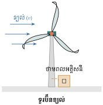

- គណនាផ្ទៃក្រឡានិងមាឌដែលមានវិមាត្រតូច
- គណនាម៉ាសធៀបនឹងផ្ទៃក្រឡា និងម៉ាសធៀបនឹងមាឌ
- គណនាល្បឿនមធ្យម ។
1. ផ្ទៃក្រឡានិងមាឌ
ខ្នាតនៃរង្វាស់ប្រវែងដែលគេនិយមប្រើគឺ មីលីម៉ែត្រ (\(\displaystyle \text{mm}\)) សង់ទីម៉ែត្រ (\(\displaystyle \text{cm}\)) ដេស៊ីម៉ែត្រ (\(\displaystyle \text{dm}\)) ម៉ែត្រ (\(\displaystyle \text{m}\)) ដេកាម៉ែត្រ (\(\displaystyle \text{dam}\)) ហិកតូម៉ែត្រ (\(\displaystyle \text{hm}\)) និងគីឡូម៉ែត្រ (\(\displaystyle \text{km}\)) ។
ក្នុងជីវភាពរស់នៅ យើងប្រើប្រាស់សម្ភារៈដែលមានវិមាត្រតូចៗ ដូចជា មុខកាត់ខ្សែភ្លើងរាងស៊ីឡាំងដែលមានអង្កត់ផ្ចិតស្មើនឹង \(\displaystyle 1\text{ mm}\), \(\displaystyle 2\text{ mm}\), មុខកាត់នៃសរសៃដែកសម្រាប់សាងសង់ដែលមានអង្កត់ផ្ចិតស្មើនឹង \(\displaystyle 6\text{ mm}\), \(\displaystyle 8\text{ mm}\), \(\displaystyle 10\text{ mm}\ldots\) ។ ប៉ុន្តែក្នុងការគណនាផ្ទៃក្រឡានិងមាឌ គេច្រើនគិតជា \(\displaystyle \text{m}^2\) និងជា \(\displaystyle \text{m}^3\) វិញ ។ ក្នុងករណីនេះ គេអាចសរសេរ ៖
ខ្សែភ្លើងមានរាងស៊ីឡាំងដែលមានអង្កត់ផ្ចិតស្មើនឹង \(\displaystyle 2\text{ mm}\) ។ គណនាផ្ទៃក្រឡាមុខកាត់របស់វាគិតជា \(\displaystyle \text{m}^2\) ។ \(\displaystyle (\pi = 3.14)\)
ដំណោះស្រាយ ៖ ផ្ទៃក្រឡាមុខកាត់ខ្សែភ្លើង ៖
ដោយ \(\displaystyle d = 2\text{ mm} = 2 \times 10^{-3}\text{ m} \implies d^{2} = 4 \times 10^{-6}\text{ m}^{2}\)
ដូចនេះ ផ្ទៃក្រឡាមុខកាត់ខ្សែភ្លើងគឺ \(\displaystyle \mathcal{A} = 3.14 \times 10^{-6}\text{ m}^{2}\) ។
គណនាអង្កត់ផ្ចិតខ្សែភ្លើង ដោយដឹងថាវាមានផ្ទៃក្រឡាមុខកាត់ស្មើនឹង \(\displaystyle \frac{\pi}{4}\times 10^{-6}\text{ m}^{2}\) ។
ដំណោះស្រាយ ៖ តាមរូបមន្ត \(\displaystyle \mathcal{A} = \frac{\pi d^{2}}{4} \implies d = \sqrt{\frac{4\mathcal{A}}{\pi}}\) ដោយ \(\displaystyle \mathcal{A} = \frac{\pi \times 10^{-6}}{4}\) យើងបាន ៖
ដូចនេះ អង្កត់ផ្ចិតខ្សែភ្លើងគឺ \(\displaystyle d = 10^{-3}\text{ m}\) (ឬ \(\displaystyle 1\text{ mm}\)) ។
គណនាមាឌរបស់ខ្សែភ្លើងមានអង្កត់ផ្ចិត \(\displaystyle 2\text{ cm}\) ហើយមានប្រវែង \(\displaystyle 200\text{ m}\) ។ \(\displaystyle (\pi = 3.14)\)
ចម្លើយ ៖ អង្កត់ផ្ចិត \(\displaystyle d = 2\text{ cm} = 0.02\text{ m} = 2 \times 10^{-2}\text{ m}\) នាំឱ្យ ៖
ដូចនេះ \(\displaystyle V = 628 \times 10^{-4}\text{ m}^{3}\) ។
2. ម៉ាសធៀបនឹងផ្ទៃក្រឡា
ចំពោះម៉ាសនៃវត្ថុស្រាលៗ គេតែងធៀបម៉ាសវាទៅនឹងផ្ទៃក្រឡា ។
ឧទាហរណ៍ ៖ ចំពោះម៉ាសក្រដាសរ៉ាម បើគេចង់ដឹងកម្រាស់វាមានន័យថា គេចង់ដឹងថាក្រដាសនោះមានម៉ាសប៉ុន្មានក្នុងផ្ទៃក្រឡា \(\displaystyle 1\text{ m}^{2}\) ?
ប្រភេទក្រដាសដែលយើងប្រើសព្វថ្ងៃមានកម្រាស់ច្រើនប្រភេទ ៖
- ចំពោះសៀវភៅក្រាស់ គេប្រើក្រដាសប្រភេទ \(\displaystyle 50\text{ g/m}^{2}\) មានន័យថាក្នុង \(\displaystyle 1\text{ m}^{2}\) ក្រដាសមានម៉ាស \(\displaystyle 50\text{ g}\) ។
- ចំពោះសៀវភៅស្តើង គេច្រើនប្រើក្រដាស \(\displaystyle 80\text{ g/m}^{2}\) និងក្របសៀវភៅ គេច្រើនប្រើក្រដាស \(\displaystyle 200\text{ g/m}^{2}\) ។
ក្រដាសរ៉ាម 1 ដុំចំនួន 500 សន្លឹក ជាក្រដាសដែលមានខ្នាត \(\displaystyle 210\text{ mm}\times 297\text{ mm}\) និងម៉ាសធៀបនឹងផ្ទៃក្រឡា \(\displaystyle 80\text{ g/m}^{2}\) ។ គណនាម៉ាសក្រដាសនោះ ។
ដំណោះស្រាយ ៖ ផ្ទៃក្រឡាក្រដាស 1 សន្លឹក ៖
ម៉ាសក្រដាស 1 សន្លឹក ៖
ម៉ាសក្រដាស 1 ដុំ (500 សន្លឹក) ៖
ដូចនេះ ក្រដាសរ៉ាម 1 ដុំមានម៉ាសប្រហែល \(\displaystyle 2.5\text{ kg}\) ។
គេទិញក្រដាសខ្នាតធំដែលមានម៉ាសធៀបនឹងផ្ទៃក្រឡា \(\displaystyle 70\text{ g/m}^{2}\) មកកាត់ជាក្រដាសរ៉ាមខ្នាត \(\displaystyle 210\text{ mm}\times 297\text{ mm}\) គេត្រូវខាតបង់ចំនៀរក្រដាសអស់ \(\displaystyle 4\%\) ។ ដើម្បីបានក្រដាសរ៉ាម 1 ដុំ គេត្រូវប្រើអស់ក្រដាសប៉ុន្មាន \(\displaystyle \text{kg}\)?
ដំណោះស្រាយ ៖ ផ្ទៃនៃក្រដាសរ៉ាម 1 ដុំ (500 សន្លឹក) ៖
ផ្ទៃដែលត្រូវខាត \(\displaystyle 4\%\) ៖
ផ្ទៃក្រដាសសរុបដើម្បីកាត់បាន 1 ដុំ ៖
ម៉ាសក្រដាសសរុបត្រូវប្រើ ៖
ដូចនេះ ដើម្បីបានក្រដាសមួយរ៉ាមគេត្រូវការក្រដាសប្រហែល \(\displaystyle 2.3\text{ kg}\) ។
សិប្បកម្មខ្នាតតូចមួយបានទិញក្រដាសខ្នាតធំដែលមានម៉ាសធៀបនឹងផ្ទៃក្រឡា \(\displaystyle 80\text{ g/m}^{2}\) ដើម្បីមកកាត់ជាក្រដាសរ៉ាមខ្នាត \(\displaystyle 210\text{ mm}\times 297\text{ mm}\) នៅពេលកាត់គេត្រូវខាតអស់ចំនៀរ \(\displaystyle 4\%\) ។ ដើម្បីបានក្រដាស \(\displaystyle 95\,340\) រ៉ាម តើគេត្រូវប្រើអស់ក្រដាសប៉ុន្មាន \(\displaystyle \text{kg}\)?
ចម្លើយ ៖ ម៉ាសក្រដាស 1 ដុំមុនខាត ៖ \(\displaystyle 500 \times 0.06237 \times 0.080 = 2.4948\text{ kg}\) ។
ដោយខាត \(\displaystyle 4\%\) ក្រដាស 1 ដុំត្រូវការ ៖ \(\displaystyle 2.4948 \times 1.04 = 2.594592\text{ kg}\) (ឬ \(\displaystyle \frac{2.4948}{0.96} \approx 2.59875\text{ kg}\)) ។
សម្រាប់ \(\displaystyle 95\,340\) ដុំ គេត្រូវប្រើក្រដាសសរុបប្រហែល \(\displaystyle 248\,281\text{ kg}\) ។
3. ម៉ាសធៀបនឹងមាឌ ឬម៉ាសមាឌ
ចំពោះវត្ថុដែលធ្ងន់ដូចជាលោហធាតុ គេច្រើនគិតម៉ាសវាធៀបទៅនឹងមាឌហៅថា ម៉ាសមាឌ ។
ឧទាហរណ៍ ៖ ខាងក្រោមនេះជាម៉ាសមាឌនៃលោហធាតុមួយចំនួនដូចជា ដែក \(\displaystyle 7.874\text{ g/cm}^{3}\) ស្ពាន់ \(\displaystyle 8.94\text{ g/cm}^{3}\) មាស \(\displaystyle 19.3\text{ g/cm}^{3}\) និងប្រាក់ \(\displaystyle 10.49\text{ g/cm}^{3}\) ។
សម្គាល់ ក្នុងភាសានិយាយ គេហៅដែកមានអង្កត់ផ្ចិត \(\displaystyle 6\text{ mm}\) ថា ដែក 6 លី (\(\displaystyle 1\text{ លី} = 1\text{ mm}\)) ។ ប្តូរខ្នាតម៉ាសមាឌ ៖
គេផលិតដែកមួយដើមមានប្រវែង \(\displaystyle 12\text{ m}\) ។ គណនាម៉ាសនៃដែកប្រភេទ 10 លី 12 លី និង 14 លី បើម៉ាសមាឌដែក \(\displaystyle \mu = 7.874\text{ g/cm}^{3} = 7874\text{ kg/m}^{3}\) \(\displaystyle (\pi = 3.14)\) ។
ដំណោះស្រាយ ៖
ដែក 10 លី (\(\displaystyle d = 10\text{ mm} = 0.01\text{ m}\)) ៖
\[m_{10} = \frac{\pi d^2}{4} \times l \times \mu = \frac{3.14 \times 10^{-4}}{4} \times 12 \times 7874 = 7.4173\text{ kg} \approx 7.4\text{ kg}\]ដែក 12 លី (\(\displaystyle d = 12\text{ mm} = 0.012\text{ m}\)) ៖
\[m_{12} = \frac{3.14 \times 144 \times 10^{-6}}{4} \times 12 \times 7874 = 10.680\text{ kg} \approx 10.7\text{ kg}\]ដែក 14 លី (\(\displaystyle d = 14\text{ mm} = 0.014\text{ m}\)) ៖
\[m_{14} = \frac{3.14 \times 196 \times 10^{-6}}{4} \times 12 \times 7874 = 14.537\text{ kg} \approx 14.5\text{ kg}\]
គណនាមាឌដែកគិតជា \(\displaystyle \text{m}^3\) ដោយដឹងថា ដែក 12 លីមួយដើមមានប្រវែង \(\displaystyle 12\text{ m}\) ។ \(\displaystyle (\pi = 3.14)\)
ដំណោះស្រាយ ៖
ដូចនេះ មាឌដែកគឺ \(\displaystyle V \approx 1356.48 \times 10^{-6}\text{ m}^3\) ។
ពូសុខគាត់ទិញដែក 6 លីចំនួន 200 ដើម និងដែក 10 លីចំនួន 20 ដើម ដែលក្នុងមួយដើមៗមានប្រវែង \(\displaystyle 12\text{ m}\) ។ គេដឹងថាដែកមួយគីឡូក្រាមថ្លៃ 2 800 ៛ ។ គណនាប្រាក់ដែលពូសុខទិញដែកទាំងពីរមុខនោះ ។ \(\displaystyle (\mu = 7.874\text{ g/cm}^{3})\)
ចម្លើយ ៖
- ម៉ាសដែក 6 លី 1 ដើម ៖ \(\displaystyle m_6 = \frac{3.14 \times 36 \times 10^{-6}}{4} \times 12 \times 7874 \approx 2.67\text{ kg}\)
ម៉ាសដែក 6 លី 200 ដើម ៖ \(\displaystyle 200 \times 2.6702 = 534.04\text{ kg}\) - ម៉ាសដែក 10 លី 20 ដើម ៖ \(\displaystyle 20 \times 7.4173 = 148.35\text{ kg}\)
- ម៉ាសសរុប ៖ \(\displaystyle 534.04 + 148.35 = 682.39\text{ kg} \approx 688\text{ kg}\)
- ប្រាក់សរុប ៖ \(\displaystyle 688\text{ kg} \times 2800\text{ ៛/kg} = 1\,926\,400\text{ ៛}\) ។
4. ល្បឿនមធ្យម

ដោយខ្យល់មានល្បឿន ដូច្នេះទើបគេអាចយកវាមកប្រើបង្វិលកង្ហារឌីណាម៉ូ ដើម្បីបំប្លែងខ្យល់ទៅជាថាមពលអគ្គិសនីសម្រាប់ប្រើប្រាស់ ។
ឧទាហរណ៍ ៖ ទោចក្រយានយន្តមួយរត់បាន \(\displaystyle 108\text{ km}\) ក្នុងរយៈពេល \(\displaystyle 2\text{ h } 15\text{ mn}\) ។ រកល្បឿនមធ្យមនៃទោចក្រយានយន្តនោះ ។
- ប្តូរខ្នាត ៖ \(\displaystyle 2\text{ h } 15\text{ mn} = 2 + \frac{15}{60} = 2.25\text{ h} = \frac{9}{4}\text{ h}\)
- ល្បឿនមធ្យម ៖ \(\displaystyle v = 108 \div \frac{9}{4} = 108 \times \frac{4}{9} = 48\text{ km/h}\) ។
ដែល \(\displaystyle d\) ជាចម្ងាយចរ, \(\displaystyle v\) ជាល្បឿនមធ្យម, និង \(\displaystyle t\) ជារយៈពេល ។
គេបាញ់កាំភ្លើងធំដើម្បីប្រារព្ធពិធីបុណ្យនៅទីក្រុង A ដោយណាត់គ្នាបាញ់នៅម៉ោង ០ កណ្តាលយប់ ។ បន្ទាប់ពីការបាញ់ \(\displaystyle 1\text{ mn}\) ក្រោយមកទើបប្រជាជននៅទីក្រុង B បានឮសំឡេងបាញ់ ។ រកចម្ងាយរវាងទីក្រុង A និងទីក្រុង B ដោយដឹងថាល្បឿនសំឡេង \(\displaystyle 343\text{ m/s}\) ។
ដំណោះស្រាយ ៖ ចម្ងាយរវាងទីក្រុងទាំងពីរ ៖
ដោយ \(\displaystyle v = 343\text{ m/s}\) និង \(\displaystyle t = 1\text{ mn} = 60\text{ s}\) ៖
ដូចនេះ ចម្ងាយរវាងទីក្រុង A និងទីក្រុង B គឺ \(\displaystyle 20.58\text{ km}\) (ប្រហែល \(\displaystyle 20.6\text{ km}\)) ។
ពពកមួយផ្ទាំងធំកំពុងតែរសាត់ពីសមុទ្រនៃខេត្តព្រះសីហនុ មកកាន់រាជធានីភ្នំពេញដែលមានចម្ងាយប្រមាណ \(\displaystyle 230\text{ km}\) ហើយខ្យល់មានល្បឿន \(\displaystyle 6\text{ m/s}\) ។ តើរយៈពេលប៉ុន្មានម៉ោងទៀត ទើបនៅរាជធានីភ្នំពេញសង្ឃឹមថានឹងមានភ្លៀង?
ចម្លើយ ៖ ប្តូរល្បឿនខ្យល់ជា \(\displaystyle \text{km/h}\) ៖ \(\displaystyle v = 6\text{ m/s} = 6 \times 3.6 = 21.6\text{ km/h} = \frac{108}{5}\text{ km/h}\) ៖
ដូចនេះ រយៈពេលគឺ \(\displaystyle 10\frac{35}{54}\text{ h}\) ។
លំហាត់
គណនាផ្ទៃក្រឡានៃមុខកាត់ស៊ីឡាំងដែលមានអង្កត់ផ្ចិត (\(\displaystyle d\)) គិតជា \(\displaystyle \text{m}^2\) ខាងក្រោម ៖
- ក. \(\displaystyle d = 1.5\text{ mm}\)
- ខ. \(\displaystyle d = 2.5\text{ mm}\)
- គ. \(\displaystyle d = 0.2\text{ mm}\)
- ឃ. \(\displaystyle d = 0.03\text{ mm}\)
- ង. \(\displaystyle d = 0.004\text{ mm}\)
- ច. \(\displaystyle d = 1.2\text{ mm}\)
មើលដំណោះស្រាយ
រូបមន្តផ្ទៃក្រឡាមុខកាត់ ៖ \(\displaystyle \mathcal{A} = \frac{\pi d^2}{4}\) (យក \(\displaystyle \pi = 3.14\), \(\displaystyle 1\text{ mm} = 10^{-3}\text{ m}\))
- ក. \(\displaystyle d = 1.5\times 10^{-3}\text{ m} \implies \mathcal{A} = \frac{3.14 \times (1.5\times 10^{-3})^2}{4} = \frac{3.14 \times 2.25 \times 10^{-6}}{4} = 1.76625 \times 10^{-6}\text{ m}^2\)
- ខ. \(\displaystyle d = 2.5\times 10^{-3}\text{ m} \implies \mathcal{A} = \frac{3.14 \times 6.25 \times 10^{-6}}{4} = 4.90625 \times 10^{-6}\text{ m}^2\)
- គ. \(\displaystyle d = 0.2\text{ mm} = 2\times 10^{-4}\text{ m} \implies \mathcal{A} = \frac{3.14 \times 4 \times 10^{-8}}{4} = 3.14 \times 10^{-8}\text{ m}^2\)
- ឃ. \(\displaystyle d = 0.03\text{ mm} = 3\times 10^{-5}\text{ m} \implies \mathcal{A} = \frac{3.14 \times 9 \times 10^{-10}}{4} = 7.065 \times 10^{-10}\text{ m}^2\)
- ង. \(\displaystyle d = 0.004\text{ mm} = 4\times 10^{-6}\text{ m} \implies \mathcal{A} = \frac{3.14 \times 16 \times 10^{-12}}{4} = 1.256 \times 10^{-11}\text{ m}^2\)
- ច. \(\displaystyle d = 1.2\text{ mm} = 1.2\times 10^{-3}\text{ m} \implies \mathcal{A} = \frac{3.14 \times 1.44 \times 10^{-6}}{4} = 1.1304 \times 10^{-6}\text{ m}^2\) ។
គណនាមាឌនៃសរសៃដែកដែលមានអង្កត់ផ្ចិត (\(\displaystyle d\)) និងប្រវែង (\(\displaystyle l\)) គិតជា \(\displaystyle \text{m}^3\) ខាងក្រោម ៖
- ក. \(\displaystyle d = 6\text{ mm}\) និង \(\displaystyle l = 12\text{ m}\)
- ខ. \(\displaystyle d = 16\text{ mm}\) និង \(\displaystyle l = 12\text{ m}\)
- គ. \(\displaystyle d = 18\text{ mm}\) និង \(\displaystyle l = 12\text{ m}\)
- ឃ. \(\displaystyle d = 24\text{ mm}\) និង \(\displaystyle l = 12\text{ m}\)
- ង. \(\displaystyle d = 16\text{ mm}\) និង \(\displaystyle l = 14\text{ m}\)
- ច. \(\displaystyle d = 12\text{ mm}\) និង \(\displaystyle l = 12\text{ m}\)
- ឆ. \(\displaystyle d = 24\text{ mm}\) និង \(\displaystyle l = 10\text{ m}\)
- ជ. \(\displaystyle d = 7\text{ mm}\) និង \(\displaystyle l = 9\text{ m}\)
មើលដំណោះស្រាយ
រូបមន្តមាឌស៊ីឡាំង ៖ \(\displaystyle V = \frac{\pi d^2}{4} \times l\) (\(\displaystyle \pi = 3.14\))
- ក. \(\displaystyle V = \frac{3.14 \times 36 \times 10^{-6}}{4} \times 12 = 339.12 \times 10^{-6}\text{ m}^3 = 3.3912 \times 10^{-4}\text{ m}^3\)
- ខ. \(\displaystyle V = \frac{3.14 \times 256 \times 10^{-6}}{4} \times 12 = 2411.52 \times 10^{-6}\text{ m}^3 = 2.41152 \times 10^{-3}\text{ m}^3\)
- គ. \(\displaystyle V = \frac{3.14 \times 324 \times 10^{-6}}{4} \times 12 = 3052.08 \times 10^{-6}\text{ m}^3 = 3.05208 \times 10^{-3}\text{ m}^3\)
- ឃ. \(\displaystyle V = \frac{3.14 \times 576 \times 10^{-6}}{4} \times 12 = 5425.92 \times 10^{-6}\text{ m}^3 = 5.42592 \times 10^{-3}\text{ m}^3\)
- ង. \(\displaystyle V = \frac{3.14 \times 256 \times 10^{-6}}{4} \times 14 = 2813.44 \times 10^{-6}\text{ m}^3 = 2.81344 \times 10^{-3}\text{ m}^3\)
- ច. \(\displaystyle V = \frac{3.14 \times 144 \times 10^{-6}}{4} \times 12 = 1356.48 \times 10^{-6}\text{ m}^3 = 1.35648 \times 10^{-3}\text{ m}^3\)
- ឆ. \(\displaystyle V = \frac{3.14 \times 576 \times 10^{-6}}{4} \times 10 = 4521.6 \times 10^{-6}\text{ m}^3 = 4.5216 \times 10^{-3}\text{ m}^3\)
- ជ. \(\displaystyle V = \frac{3.14 \times 49 \times 10^{-6}}{4} \times 9 = 346.185 \times 10^{-6}\text{ m}^3 = 3.46185 \times 10^{-4}\text{ m}^3\) ។
ឈើជ្រុងមួយដើមមានមុខកាត់ \(\displaystyle 4\text{ cm} \times 8\text{ cm}\) និងប្រវែង \(\displaystyle 4.5\text{ m}\) ។ បើគេទិញឈើនោះ ចំនួន 50 ដើម តើត្រូវចំណាយប្រាក់អស់ប៉ុន្មាន បើឈើមួយម៉ែត្រគូបថ្លៃ 1 200 000 ៛ ?
មើលដំណោះស្រាយ
ប្តូរខ្នាតមុខកាត់ជាម៉ែត្រ ៖
\[4\text{ cm} = 0.04\text{ m}, \quad 8\text{ cm} = 0.08\text{ m}\]មាឌឈើ 1 ដើម ៖
\[V_1 = 0.04\text{ m} \times 0.08\text{ m} \times 4.5\text{ m} = 0.0144\text{ m}^3\]មាឌឈើទាំង 50 ដើម ៖
\[V = 50 \times 0.0144\text{ m}^3 = 0.72\text{ m}^3\]ប្រាក់ត្រូវចំណាយ ៖
\[\text{ប្រាក់សរុប} = 0.72\text{ m}^3 \times 1\,200\,000\text{ ៛/m}^3 = 864\,000\text{ ៛}\]ដូចនេះ ត្រូវចំណាយប្រាក់អស់ \(\displaystyle 864\,000\text{ ៛}\) ។
គេដឹងថាដែក 10 លីមួយដើមមានម៉ាស \(\displaystyle 7.4\text{ kg}\) ។ រកម៉ាសនៃដែក 16 លីវិញ ។
មើលដំណោះស្រាយ
ដោយដែកទាំងពីរប្រភេទមានប្រវែងដូចគ្នា ម៉ាសរបស់ដែកសមាមាត្រទៅនឹងផ្ទៃក្រឡាមុខកាត់ (ឬការេនៃអង្កត់ផ្ចិត) ៖
\[\frac{m_{16}}{m_{10}} = \frac{d_{16}^2}{d_{10}^2} = \left(\frac{16}{10}\right)^2 = 1.6^2 = 2.56\]ទាញរកម៉ាសដែក 16 លី ៖
\[m_{16} = 2.56 \times m_{10} = 2.56 \times 7.4\text{ kg} = 18.944\text{ kg} \approx 18.9\text{ kg}\]ដូចនេះ ដែក 16 លីមួយដើមមានម៉ាសប្រហែល \(\displaystyle 18.944\text{ kg}\) (ឬ \(\displaystyle \approx 18.9\text{ kg}\)) ។
សៀវភៅសរសេរមួយក្បាលមាន 100 ទំព័រ ហើយមានខ្នាត \(\displaystyle 148\text{ mm} \times 210\text{ mm}\) ។ គេប្រើក្រដាសមានម៉ាសធៀបនឹងផ្ទៃក្រឡា \(\displaystyle 70\text{ g/m}^{2}\) ដើម្បីធ្វើសាច់ក្នុង ហើយក្រដាសមានម៉ាសធៀបនឹងផ្ទៃក្រឡា \(\displaystyle 150\text{ g/m}^{2}\) ដើម្បីធ្វើក្របសៀវភៅ ។
- ក. គេផលិតសៀវភៅនេះចំនួន 10 000 ក្បាល តើគេត្រូវការក្រដាសសរុបម៉ាសប៉ុន្មាន \(\displaystyle \text{kg}\) ? បើក្នុងការផលិតគេខាតចំនៀរអស់ \(\displaystyle 4\%\) ។
- ខ. បើក្រដាស \(\displaystyle 1\text{ kg}\) ថ្លៃ 4 800 ៛ រកប្រាក់ដើមថ្លៃនៃសៀវភៅមួយក្បាល ។
មើលដំណោះស្រាយ
ផ្ទៃក្រឡាមួយទំព័រ ៖ \(\displaystyle \mathcal{A} = 0.148\text{ m} \times 0.210\text{ m} = 0.03108\text{ m}^2\)
- ក.
សៀវភៅ 1 ក្បាលមាន 100 ទំព័រ = 50 សន្លឹក (សាច់ក្នុង) និង 1 សន្លឹកទំហំពីរដងជាក្របមុខ-ក្រោយ (ស្មើ \(\displaystyle 2 \times 0.03108\text{ m}^2\)) ៖
- ម៉ាសសាច់ក្នុង 1 ក្បាល ៖ \(\displaystyle 50 \times 0.03108 \times 70\text{ g} = 108.78\text{ g} = 0.10878\text{ kg}\)
- ម៉ាសក្រប 1 ក្បាល ៖ \(\displaystyle 2 \times 0.03108 \times 150\text{ g} = 9.324\text{ g} = 0.009324\text{ kg}\)
- ម៉ាសសៀវភៅ 1 ក្បាល ៖ \(\displaystyle 0.10878 + 0.009324 = 0.118104\text{ kg}\)
ម៉ាសសុទ្ធសម្រាប់ 10 000 ក្បាល ៖
\[10\,000 \times 0.118104\text{ kg} = 1181.04\text{ kg}\]ដោយខាតបង់ចំនៀរអស់ \(\displaystyle 4\%\) ម៉ាសក្រដាសសរុបត្រូវប្រើគឺ ៖
\[M = \frac{1181.04}{1 - 0.04} = \frac{1181.04}{0.96} = 1230.25\text{ kg}\](ឬគិត \(\displaystyle 1181.04 \times 1.04 = 1228.28\text{ kg}\)) ។
- ខ.
ថ្លៃក្រដាសសរុប ៖
\[1230.25\text{ kg} \times 4800\text{ ៛/kg} = 5\,905\,200\text{ ៛}\]ប្រាក់ដើមថ្លៃក្រដាសនៃសៀវភៅមួយក្បាល ៖
\[\frac{5\,905\,200\text{ ៛}\rule[-0.5em]{0pt}{1.55em}}{10\,000} \approx 591\text{ ៛} \text{ ។}\]
ខ្សែភ្លើងមួយដុំមានប្រវែង \(\displaystyle 100\text{ m}\) មានមុខកាត់ \(\displaystyle 2\frac{1}{2}\text{ mm}\) ។ គណនាម៉ាសនៃខ្សែភ្លើងនេះ ដោយដឹងថាម៉ាសមាឌនៃស្ពាន់ខ្សែភ្លើង \(\displaystyle \mu = 8.94\text{ g/cm}^{3}\) ។ គេមិនគិតពីម៉ាសជ័រដែលរុំស្រោបខ្សែភ្លើងនោះទេ ។
មើលដំណោះស្រាយ
មុខកាត់មានអង្កត់ផ្ចិត \(\displaystyle d = 2.5\text{ mm} = 0.25\text{ cm}\) ប្រវែង \(\displaystyle l = 100\text{ m} = 10\,000\text{ cm}\) មាឌខ្សែស្ពាន់ ៖
\[V = \frac{\pi d^2}{4} \times l = \frac{3.14 \times 0.25^2}{4} \times 10\,000 = \frac{3.14 \times 0.0625 \times 10\,000}{4} = 490.625\text{ cm}^3\]ម៉ាសខ្សែស្ពាន់ ៖
\[m = V \times \mu = 490.625\text{ cm}^3 \times 8.94\text{ g/cm}^3 = 4386.1875\text{ g} \approx 4.386\text{ kg}\]ដូចនេះ ម៉ាសនៃខ្សែភ្លើងគឺប្រហែល \(\displaystyle 4.39\text{ kg}\) ។
នៅថ្ងៃអាទិត្យ វិបុលបានជិះកង់ពីក្រុងតាខ្មៅទៅលេងរមណីដ្ឋានទន្លេបាទីដែលមានចម្ងាយ \(\displaystyle 26\text{ km}\) ក្នុងរយៈពេល \(\displaystyle 41\text{ mn } 52\text{ s}\) ។ រកល្បឿនមធ្យមក្នុងមួយម៉ោង ។
មើលដំណោះស្រាយ
ប្តូររយៈពេលជាម៉ោង ៖
\[41\text{ mn } 52\text{ s} = 41 \times 60 + 52 = 2512\text{ s} = \frac{2512}{3600}\text{ h} = \frac{157}{225}\text{ h} \approx 0.6978\text{ h}\]ល្បឿនមធ្យម ៖
\[v = \frac{d}{t} = \frac{26\text{ km}}{\frac{157}{225}\text{ h}} = \frac{26 \times 225}{157} = \frac{5850}{157} \approx 37.26\text{ km/h}\]ដូចនេះ ល្បឿនមធ្យមរបស់វិបុលគឺប្រហែល \(\displaystyle 37.26\text{ km/h}\) ។
ផ្ទះរតនានៅចម្ងាយ \(\displaystyle 800\text{ m}\) ពីសាលារៀន ។ គាត់ដើរដោយល្បឿនមធ្យម \(\displaystyle 5\text{ km/h}\) ។ តើរតនាត្រូវចេញពីផ្ទះនៅម៉ោងប៉ុន្មាន ដើម្បីឱ្យទៅដល់សាលារៀន \(\displaystyle 15\text{ mn}\) មុនពេលចូលរៀនម៉ោង \(\displaystyle 7\text{ h } 00\text{ mn}\) ។
មើលដំណោះស្រាយ
ចម្ងាយចរ ៖ \(\displaystyle d = 800\text{ m} = 0.8\text{ km}\) រយៈពេលដើរ ៖
\[t = \frac{d}{v} = \frac{0.8\text{ km}}{5\text{ km/h}} = 0.16\text{ h} = 0.16 \times 60\text{ mn} = 9.6\text{ mn} = 9\text{ mn } 36\text{ s}\]ម៉ោងត្រូវទៅដល់សាលា ៖
\[7\text{ h } 00\text{ mn} - 15\text{ mn} = 6\text{ h } 45\text{ mn}\]ម៉ោងត្រូវចេញពីផ្ទះ ៖
\[6\text{ h } 45\text{ mn} - 9\text{ mn } 36\text{ s} = 6\text{ h } 35\text{ mn } 24\text{ s}\]ដូចនេះ រតនាត្រូវចេញពីផ្ទះនៅម៉ោង \(\displaystyle 6\text{ h } 35\text{ mn } 24\text{ s}\) (ប្រហែលម៉ោង ៦:៣៥ នាទីព្រឹក) ។
នៅម៉ោង 7:00 សុខាបានជិះរថភ្លើងចេញពីខេត្តបាត់ដំបងមកភ្នំពេញ ដែលមានចម្ងាយផ្លូវ \(\displaystyle 291\text{ km}\) ដោយមានល្បឿនមធ្យម \(\displaystyle 60\text{ km/h}\) ហើយមករា ជិះម៉ូតូចេញពីភ្នំពេញមកខេត្តបាត់ដំបងដែលមានល្បឿនមធ្យម \(\displaystyle 40\text{ km/h}\) ។ តើអ្នកទាំងពីរជួបគ្នានៅម៉ោងប៉ុន្មាន ?
មើលដំណោះស្រាយ
ល្បឿនរួមនៃចលនាផ្ទុយទិសរកគ្នា ៖
\[v_{\text{រួម}} = 60\text{ km/h} + 40\text{ km/h} = 100\text{ km/h}\]រយៈពេលរហូតដល់ជួបគ្នា ៖
\[t = \frac{d}{v_{\text{រួម}\rule[-0.5em]{0pt}{1.55em}}} = \frac{291\text{ km}}{100\text{ km/h}} = 2.91\text{ h} = 2\text{ h } 54.6\text{ mn} = 2\text{ h } 54\text{ mn } 36\text{ s}\]ម៉ោងជួបគ្នា ៖
\[7\text{ h } 00\text{ mn} + 2\text{ h } 54\text{ mn } 36\text{ s} = 9\text{ h } 54\text{ mn } 36\text{ s}\]ដូចនេះ អ្នកទាំងពីរជួបគ្នានៅម៉ោង \(\displaystyle 9\text{ h } 54\text{ mn } 36\text{ s}\) (ប្រហែលម៉ោង ៩:៥៥ នាទីព្រឹក) ។
- ក. រថភ្លើងមួយបានធ្វើដំណើររយៈពេល 3 ម៉ោងដោយល្បឿនមធ្យម \(\displaystyle 30\text{ km/h}\) ។ តើរថភ្លើងធ្វើដំណើរបានចម្ងាយប៉ុន្មាន?
- ខ. បើរថភ្លើងដដែលធ្វើដំណើរ \(\displaystyle 500\text{ m}\) ដោយល្បឿនដដែល ។ តើរថភ្លើងធ្វើដំណើរអស់រយៈពេលប៉ុន្មាន?
មើលដំណោះស្រាយ
- ក.
ចម្ងាយចរ ៖
\[d = v \times t = 30\text{ km/h} \times 3\text{ h} = 90\text{ km}\]ដូចនេះ រថភ្លើងធ្វើដំណើរបានចម្ងាយ \(\displaystyle 90\text{ km}\) ។
- ខ.
ចម្ងាយ \(\displaystyle d = 500\text{ m} = 0.5\text{ km}\) ៖
\[t = \frac{d}{v} = \frac{0.5\text{ km}}{30\text{ km/h}} = \frac{1}{60}\text{ h} = 1\text{ នាទី} = 60\text{ វិនាទី}\]ដូចនេះ រយៈពេលធ្វើដំណើរគឺ \(\displaystyle 1\text{ នាទី}\) (ឬ \(\displaystyle 60\text{ វិនាទី}\)) ។
រថយន្តមួយបានផ្លាស់ទី \(\displaystyle 2.4\text{ km}\) ទៅទិសខាងកើតរយៈពេល 120 នាទី ។ តើល្បឿនជាមធ្យមរបស់រថយន្តគឺប៉ុន្មាន?
មើលដំណោះស្រាយ
រយៈពេល ៖ \(\displaystyle t = 120\text{ mn} = 2\text{ h}\) ល្បឿនមធ្យម ៖
\[v = \frac{d}{t} = \frac{2.4\text{ km}}{2\text{ h}} = 1.2\text{ km/h}\](ឬជា \(\displaystyle \text{m/s}\) ៖ \(\displaystyle v = \frac{2400\text{ m}}{7200\text{ s}} = \frac{1}{3}\text{ m/s} \approx 0.33\text{ m/s}\)) ដូចនេះ ល្បឿនមធ្យមរបស់រថយន្តគឺ \(\displaystyle 1.2\text{ km/h}\) ។
សុខាអាចរត់ចម្ងាយក្នុងល្បឿនមធ្យម \(\displaystyle 8\text{ m/s}\) ។ តើនាងត្រូវចំណាយពេលប៉ុន្មានដើម្បីបញ្ចប់ការរត់ប្រណាំងចម្ងាយ \(\displaystyle 2\text{ km}\) ?
មើលដំណោះស្រាយ
ចម្ងាយចរ ៖ \(\displaystyle d = 2\text{ km} = 2000\text{ m}\) រយៈពេលចំណាយ ៖
\[t = \frac{d}{v} = \frac{2000\text{ m}}{8\text{ m/s}} = 250\text{ s} = 4\text{ mn } 10\text{ s}\]ដូចនេះ សុខាត្រូវចំណាយពេល \(\displaystyle 250\text{ វិនាទី}\) (ឬ \(\displaystyle 4\text{ នាទី } 10\text{ វិនាទី}\)) ។
តើយន្តហោះ ហោះក្នុងល្បឿន \(\displaystyle 575\text{ km/h}\) ត្រូវចំណាយពេលប៉ុន្មានដើម្បីធ្វើដំណើរចម្ងាយ \(\displaystyle 1700\text{ km}\) ?
មើលដំណោះស្រាយ
រយៈពេលធ្វើដំណើរ ៖
\[t = \frac{d}{v} = \frac{1700\text{ km}}{575\text{ km/h}} = \frac{68}{23}\text{ h} = 2\frac{22}{23}\text{ h} \approx 2.9565\text{ h}\]ប្តូរជា ម៉ោង និង នាទី ៖
\[2\text{ h} + 0.9565 \times 60\text{ mn} \approx 2\text{ h } 57\text{ mn } 23\text{ s}\]ដូចនេះ យន្តហោះត្រូវចំណាយពេលប្រហែល \(\displaystyle 2\text{ ម៉ោង } 57\text{ នាទី } 23\text{ វិនាទី}\) (ឬ \(\displaystyle \frac{68}{23}\text{ ម៉ោង}\)) ។
តាមការស្រាវជ្រាវរកឃើញថាពីងពាងអាចគ្របដណ្តប់បាន \(\displaystyle 20\text{ cm}\) ក្នុងរយៈពេល \(\displaystyle 5\text{ s}\) ។ គណនាល្បឿនមធ្យមរបស់ពីងពាង ។
មើលដំណោះស្រាយ
ល្បឿនមធ្យម ៖
\[v = \frac{d}{t} = \frac{20\text{ cm}}{5\text{ s}} = 4\text{ cm/s}\](ឬជា \(\displaystyle \text{m/s}\) ៖ \(\displaystyle v = \frac{0.2\text{ m}}{5\text{ s}} = 0.04\text{ m/s}\)) ដូចនេះ ល្បឿនមធ្យមរបស់ពីងពាងគឺ \(\displaystyle 4\text{ cm/s}\) (ឬ \(\displaystyle 0.04\text{ m/s}\)) ។
ខ្លឹមសារ៖ សៀវភៅពុម្ពគណិតវិទ្យាថ្នាក់ទី៨ របស់ក្រសួងអប់រំ យុវជន និងកីឡា · វាយអត្ថបទ គូររូបភាពឡើងវិញ និងរៀបចំលើអនឡាញដោយលោកគ្រូ សាន សុខលី សម្រាប់ការសិក្សាដោយឥតគិតថ្លៃ និងមិនរកប្រាក់ចំណេញ។ មិនមែនជាការបោះពុម្ពផ្លូវការរបស់ក្រសួងទេ។